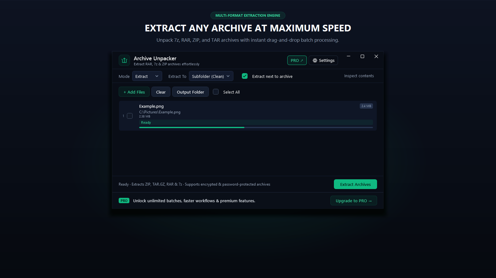

Modern Archive Manager
Extract RAR, 7z & ZIP Archives Cleanly.
Without the 90s Nag Screens.
WinRAR is famous for persistent 40-day trial nag dialogs, while older extraction tools look like they were built for Windows 95. Archive Unpacker brings compressed file management into the Windows 11 era with a sleek Fluent interface, responsive archive inspection, and right-click context menu integration.
winget install --id 9NXS3LDTBRX8 --source msstore
Runs on Windows 10 & 11 (64-bit). No sign-up, no subscriptions, zero cloud telemetry.

Your files never leave your PC. No cloud uploads, no third-party tracking.
No startup daemons, no background services, no persistent system tray bloat.
Useful free edition with no expiry. Upgrade once for lifetime extras; no subscriptions.
Designed for Performance
Key Features & Capabilities
Built with native Windows 11 Fluent styling, high-efficiency local engines, and zero friction.
Wide Archive Support
Decompress .zip, .rar, .7z, .tar, .gz, .tgz, and .bz2 files quickly with a unified engine.
Inspect Before Unpacking
Browse archive contents, inspect nested folder trees, and verify file sizes before committing to extraction.
Windows Shell Integration
Right-click any archive in File Explorer to Extract Here or Extract to folder directly from the context menu.
No Nag Screens
A clean, modern experience without popup expiration reminders, bloatware installers, or bundled toolbars.
Quick Start Guide
How to Use Archive Unpacker
Three straightforward steps from file selection to completed task.
Open or Right-Click Archive
Double-click an archive file, drag it into the app, or right-click in File Explorer to extract immediately.
Inspect Contents (Optional)
Review file lists, individual file sizes, and internal folders before unpacking.
Extract to Destination
Extract the complete archive or selected files into a clean target folder with a single click.
Transparent & Fair Pricing
Free vs. Lifetime PRO
Download free from the Microsoft Store. Upgrade inside the app whenever you need heavy-duty batch features.
FREE FOREVER
Standard Edition
$0 no expiration
Full decompression for RAR, 7z, ZIP, and TAR files, archive content inspection, and standard ZIP creation.
- 100% offline file processing
- No recurring subscription
- Clean Windows 11 Fluent interface
- No watermarks or cloud lock-in
OPTIONAL LIFETIME UPGRADE
PRO Edition
$3.99 one-time payment
Batch multi-archive extraction, TAR.GZ creation, maximum compression algorithms, and upgrade banner removal.
- Extract multiple archives at once
- Create TAR.GZ Linux-ready archives
- Maximum compression mode
- Lifetime license
Download from Microsoft Store, then click PRO in the app for 1-click checkout.
Prefer standalone? Buy key on Gumroad
Answers
Frequently Asked Questions
Can Archive Unpacker extract password-protected RAR or 7z files?
Yes. If an archive requires a decryption password, Archive Unpacker prompts you for the passphrase and cleanly extracts the encrypted contents.
Does it integrate with Windows File Explorer?
Yes. The installer registers native shell verbs so you can right-click archives in Explorer and select Extract Here or Extract to folder.
Will it ever show trial expiration popups?
Never. The free version remains permanently free for standard single-archive decompression without nag dialogs.
Part of the SC Utility Suite
Looking for other native Windows desktop tools? Explore the other 6 privacy-first utilities in our family: